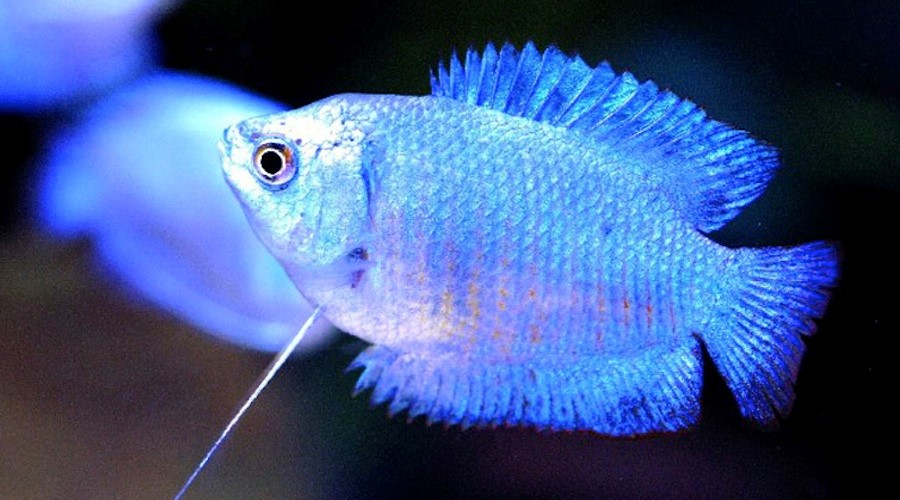

GURAMI ENANO

La colisa lalia, también es conocido en acuariofilia como el gurami enano. Pertenece a la familia de los belóntidos, como el betta o el gurami perla.
Los peces colisas lalia habitan de forma natural en pantanos, lagunas, tramos de río con poca o ninguna corriente, y en general aguas de poca profundidad donde existe muchísima vegetación.
Su ubicación geográfica es bastante variada, pero suele estar en zonas constantemente inundadas, como la zona oriental de la India y Bangladesh.
Este pez no solo es bonito por su apariencia, sino también por su comportamiento.
Los guramis enanos son omnívoros y pueden comer pequeños insectos y gusanos, así como pastar en las algas. Los alimentos vivos y congelados como las larvas de mosquito, las dafnias,
la gamba de salmuera, la gamba mysis y las larvas de mosquito criadas en cautividad constituyen un alimento saludable para los peces.
- Se trata de una especie muy pequeña, no llega a medir más de 6 centímetros, lo que le hace bastante único porque los peces con forma rectangular,
como este, suelen ser mayores.
- pez de color azul casi transparente, con rayas verticales de un color entre rojo y anaranjado oscuro.
- Sus colores tienden a ser vivos, casi eléctricos, siendo sus aletas laterales las que adquieren generalmente un tono más claro.
- Son muy tímidos y solitarios, no les gusta estar cerca de peces rápidos, y suelen nadar en la zona superior de la pecera.
- En su área de distribución natural se seca y se come, aunque también se destina a pez de acuario.
REGRESAR AL MENU